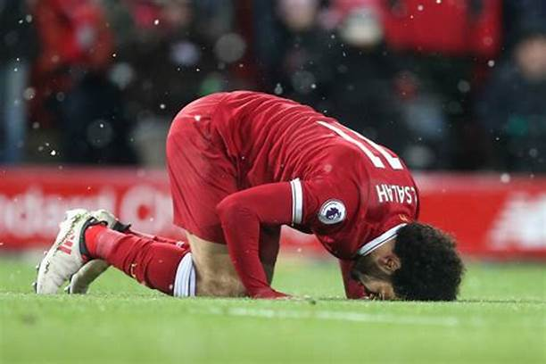

|  |
| MOHAMED SALAH PROFIL
picture by google |
Mohamed Salah Ghaly, atau lebih dikenal dengan sebutan “Salah” adalah pemain sepak bola asal Mesir yang memperkuat Liverpool sejak Juni 2017. Sebelum memperkuat Fioentina dengan status pinjaman dari Chelsea, Salah mengawali karirnya dengan bermain untuk klun El-Mokawloon pada 2010-2012. Pada tahun 2012, Salah bergabung dnegan klub Swiss Super League ‘Basel’ selama 4 musim dan tercatat sebanyak 47 kali bertanding dnegan menorehkan 9 gol.
Mohamed Salah Ghaly adalah seorang pemain sepak bola asal Mesir yang saat ini bermain sebagai gelandang sayap dari klup Liverpool F.C dengan nilai transfer £39 juta dari A.S. Roma, dan Tim nasional Mesir. Salah juga pernah mewakili Mesir ikut bermain pada Piala Dunia FIFA U-20 tahun 2011 dan olimpiade 2012. Salah juga memenangkan Liga Super Swiss di musim pertamanya dengan Basel dan dianugerahi sebagai Pemain Muda Afrika Terbaik Tahun 2012.